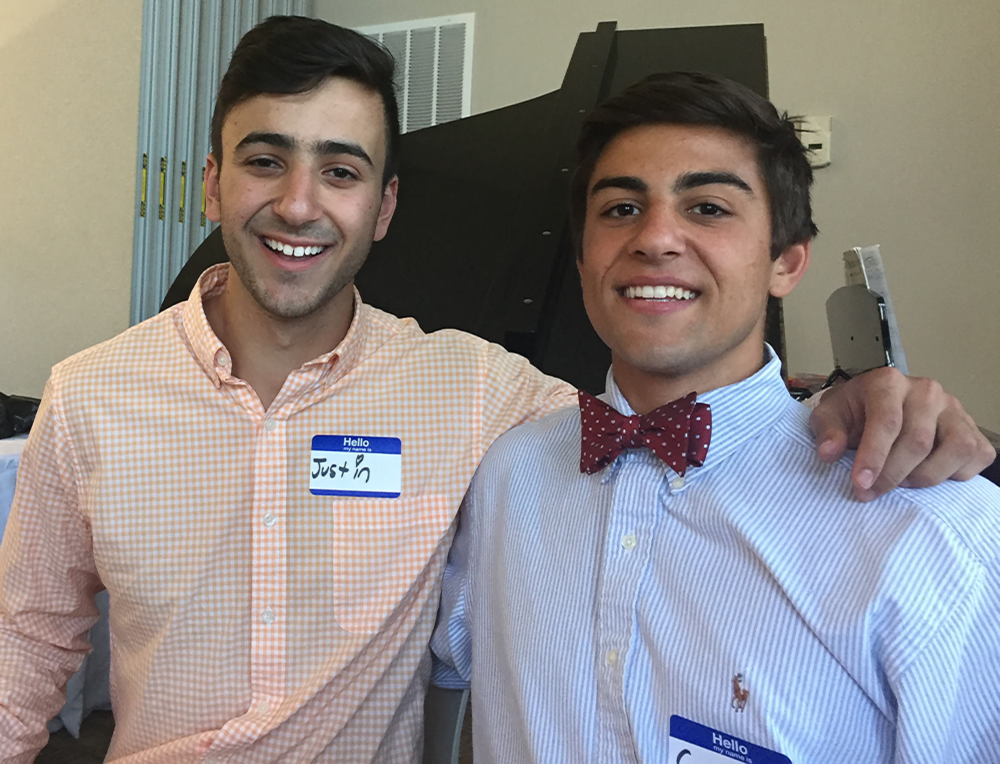

New Introduction
Hello, and welcome to my updated website. Do you see that handsome and sophisticated looking man in the orange button-down? Well, that is not me but that is my ‘younger’ brother. I am the large man-boy next to him. I have redacted my name for anonymity reasons.
I am a junior at Virginia Tech Studying Chemistry. I am earning two minors. One minor is in Science Engineering Law which revolves around Intellectual Property (IP) and the other is in Professional and Technical Writing.
My experience with Digital Media has grown significantly throughout this semester. I have learned valuable skills involving HTML, podcast design, and videography. I initially knew nothing about HTML, but over the duration of this semester, my abilities have grown, and my interest has grown at an exponential rate. In my own time I designed a website for my club the Student Intellectual Property Society at Virginia Tech, which can be found here. I would not have been able to create this website without the knowledge gained from this class.